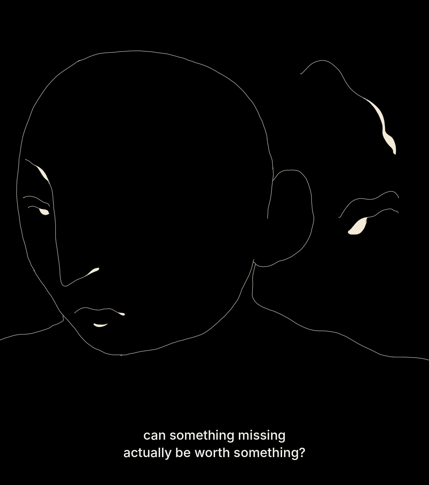
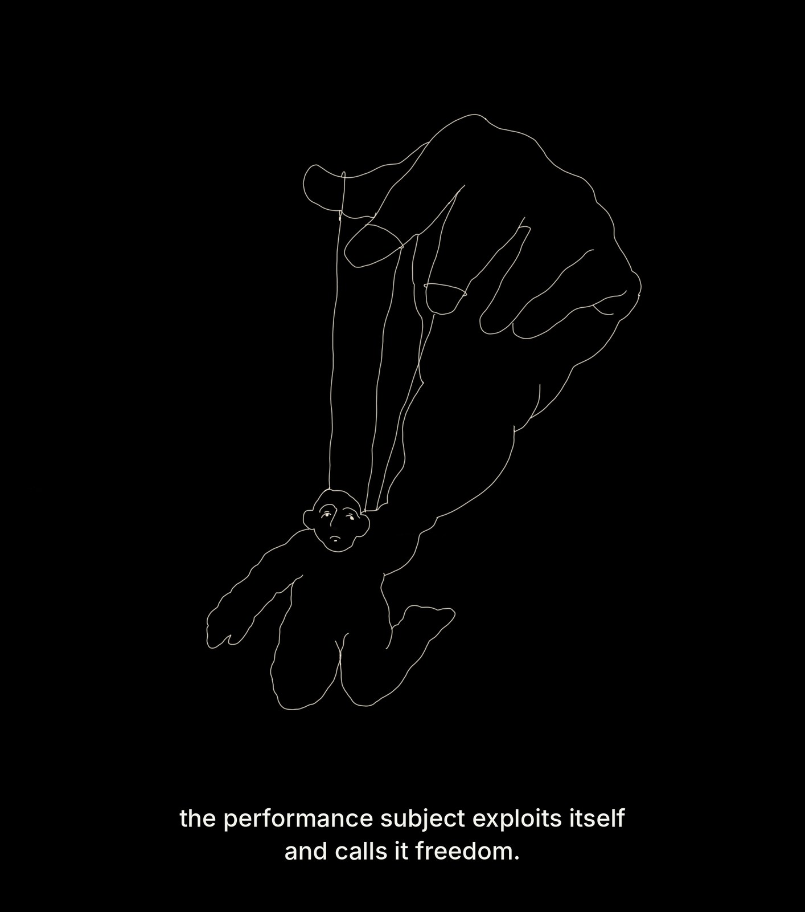
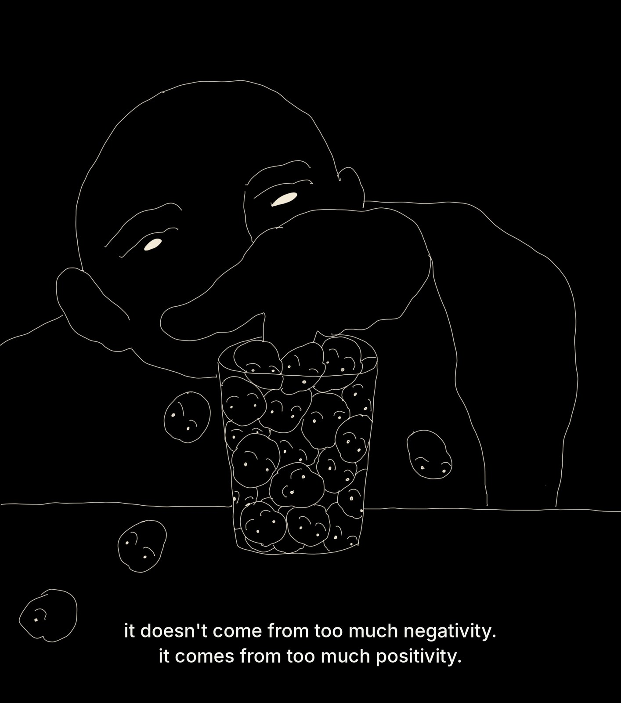
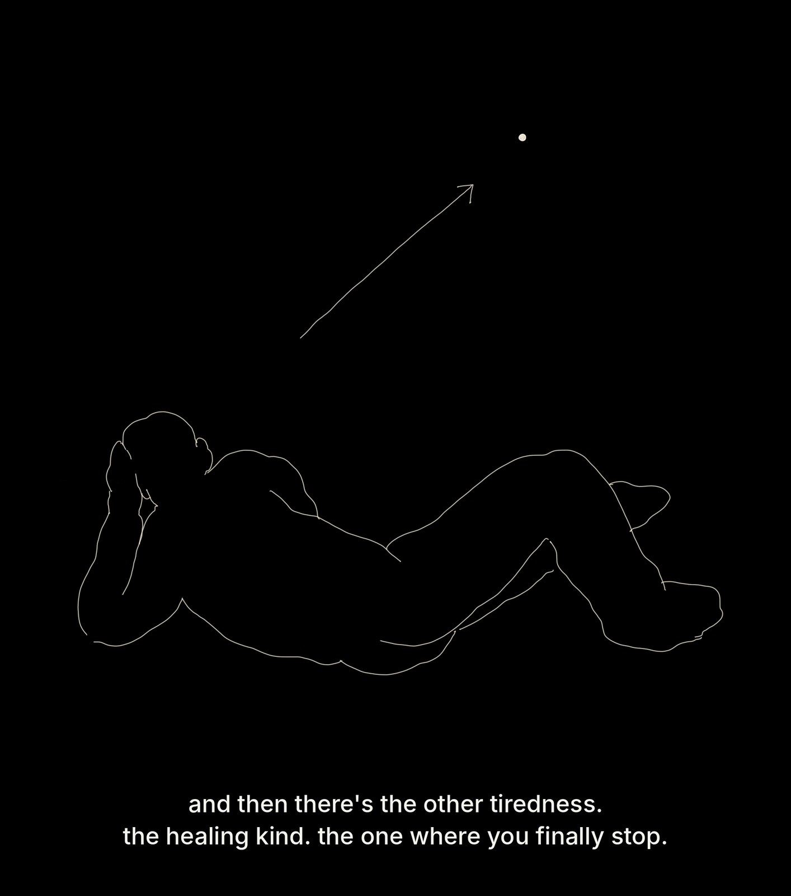
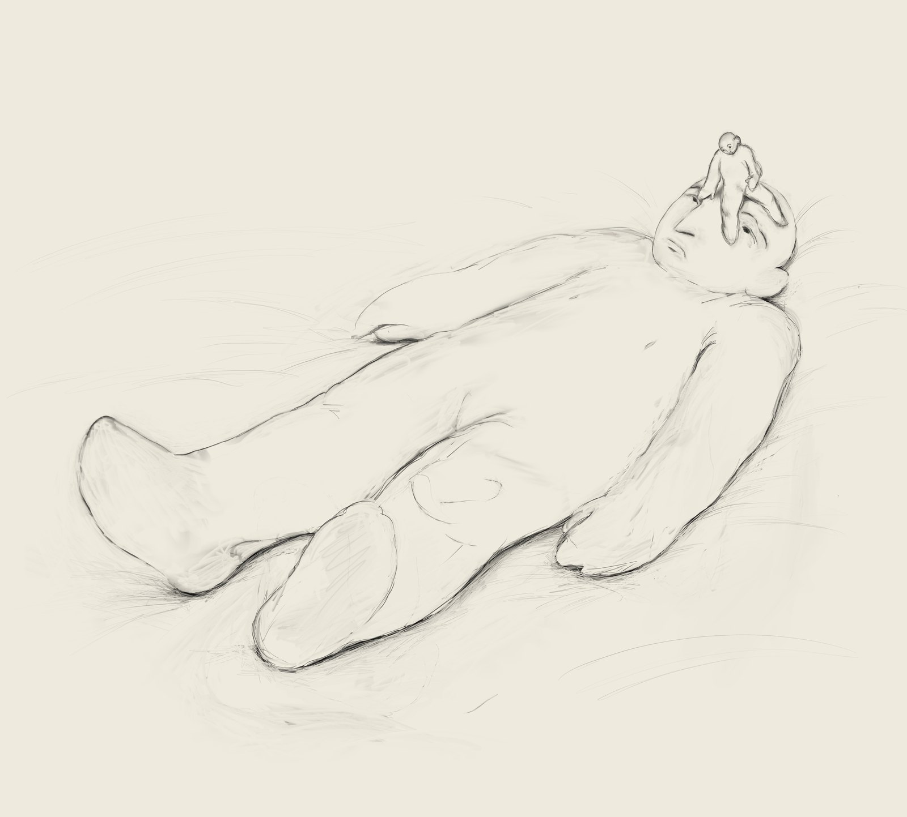
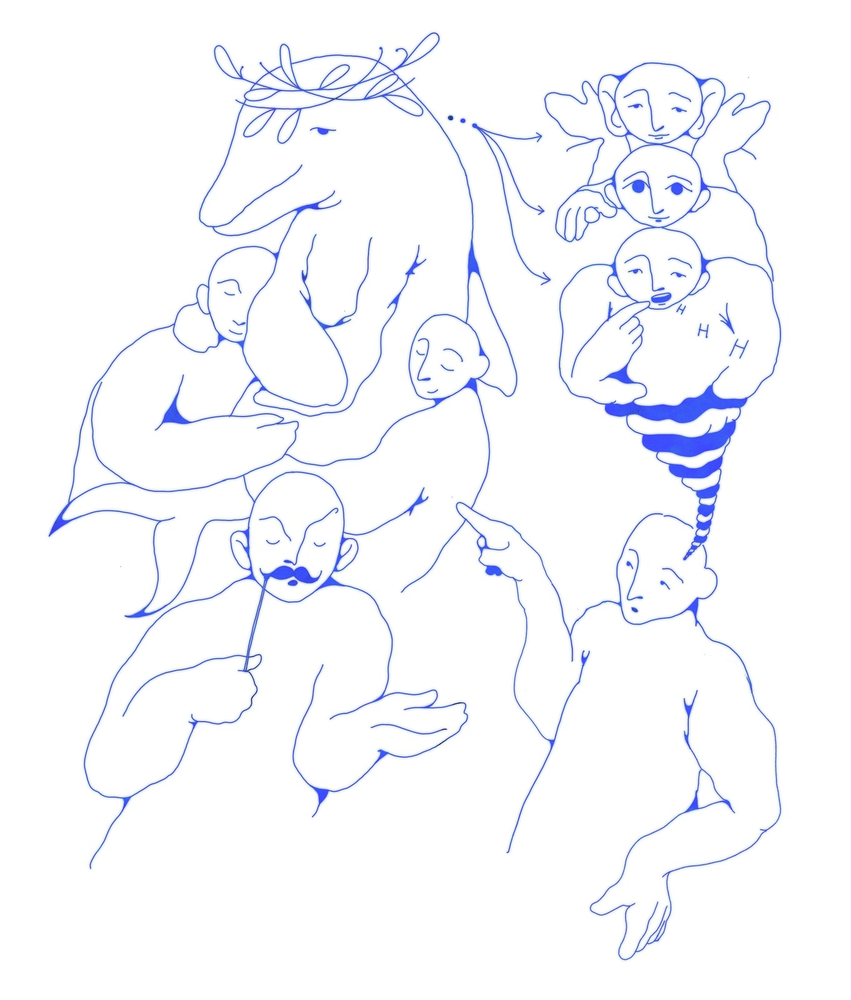

illustration
borrowed words




Stop crying, 2026
What gives you a say in my body, in my thoughts, in my most hidden corner? Thoughts keep multiplying inside my head, and gossip, gossip, gossip.

Stop crying I, 2026
digital drawing

Stop crying II, 2026
digital drawing

Stop crying III, 2026
digital drawing

Untitled, 2026
digital drawing

Untitled, 2026
digital drawing